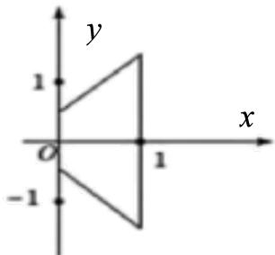
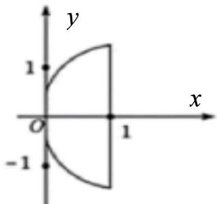
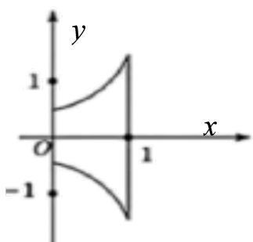
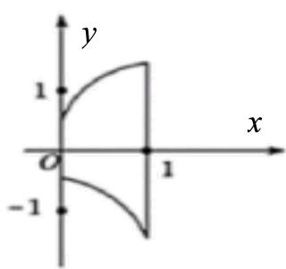
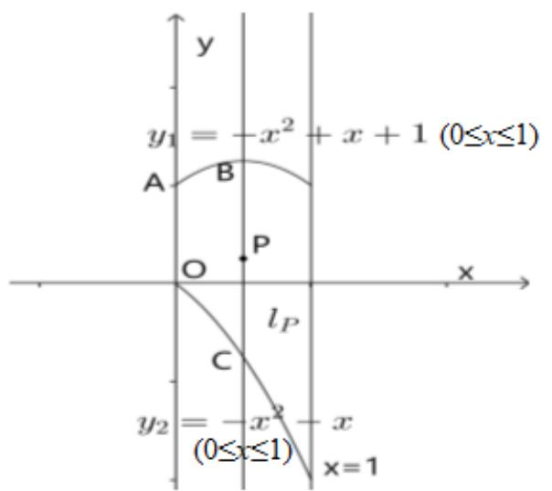
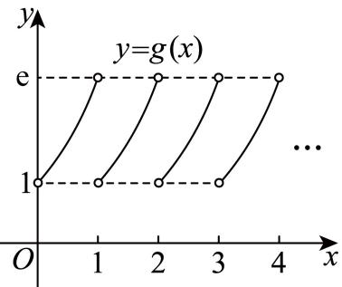
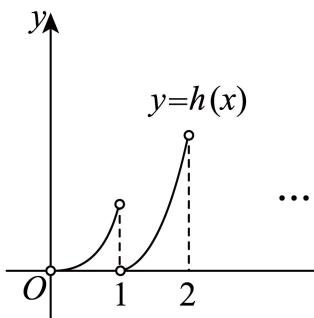

01 【来源：闵行26二模·19】
已知 ，。
（1）当 时，解方程 。
（2）若函数 在 上有唯一的极值点，求 的取值范围，并判断这个极值点是极大值点还是极小值点。
答案与解析
答案
方程的解集为
，极值点为极大值点.
解析
（1）当 ，，故 （）。
（2）在 上， 令 ，则 ，值域为 。
因此有唯一驻点当且仅当 。
在该点左侧 ，右侧 ，故它是唯一极大值点。
FY27高数功底考 · 教师版 · 本专题 62 题
旧版 PDF 尚未同步近期校订，已暂停下载；请用打印／保存本专题 PDF 导出当前网页。教师版含答案与解析。
没有匹配的题目，请更换关键词或清空搜索。
已知 ，。
（1）当 时，解方程 。
（2）若函数 在 上有唯一的极值点，求 的取值范围，并判断这个极值点是极大值点还是极小值点。
方程的解集为
，极值点为极大值点.
（1）当 ，，故 （）。
（2）在 上， 令 ，则 ，值域为 。
因此有唯一驻点当且仅当 。
在该点左侧 ，右侧 ，故它是唯一极大值点。
设函数 与 的定义域均为 ，若存在 ，满足 且 ，则称函数 与 “局部趋同”。
（1）判断函数 与 是否“局部趋同”，并说明理由；
（2）已知函数 ，。求证：对任意的正数 ，都存在正数 ，使得函数 与 “局部趋同”；
（3）对于给定的实数 ，若存在实数 ，使得函数 与 “局部趋同”，求实数 的取值范围。
（1）不是；（2）证明见解析；（3）。
（1）、，导数相等仅有 。但 ，，故不“局部趋同”。
（2）需要存在 使 且 。
消去右端得 。
对任意 ，此方程判别式为 ，两根和为 、积为 ，故两根均正。
取小根 此时函数值与导数均相等，命题成立。
（3）局部趋同要求 、。
后一式给出 ，代入前式得 ，即 。
令 ，则 。
故 在 递增、在 递减，最大值为 ，且 ，值域为 。
因此有解当且仅当 ；取相应 ，再取 即可。
故 。
平移对称法在几何学中具有重要的应用。设平面直角坐标系 中有一图形 ，过 内任意一点 作垂直于 轴的直线 ，满足 为一线段。现沿 方向平移这些线段，使得它们的中点均在 轴上，这样叫做平移对称法。对于 、、直线 和直线 围成的封闭图形 ，对它进行一次平移对称，得到的图像大致为（ ）。




A
方法一：当 ，上下边界纵坐标分别为1与0，中点为 ，平移后为 ；当 ，上下边界为 ，中点为 ，平移后为 。由此排除B、C、D，选A。
方法二：竖直线段长度为 。中点移至 轴后，上下边界分别为 和 ，，故图形由直线围成，选A。

下列函数中，既是奇函数又是增函数的是（ ）。
A. B. C. D.
B
为偶函数； 为奇函数且在实轴上严格递增； 既非奇函数也非偶函数； 的定义域不关于原点对称。故选B。
已知函数 是奇函数，则 ______。
-1
取 ，奇函数条件给出 。该恒等式对任意正数 成立，比较系数得 。代入可验证整个定义域上的奇性。
下列函数是偶函数的（ ）。
A.
B.
C.
D.
B
为偶函数； 为奇函数， 非奇非偶。因此选 B。
已知 为奇函数，则 ______。
0
奇函数满足 ，而 ，故 。此时 确为奇函数。
函数 的定义域是______。
对数真数必须为正，即 ，等价于 ，解得 或 。所以定义域为 。
已知 则 ______。
√3
由于 ，应代入分段函数的正半轴分支 ，故 。
设 若实数 满足 ，且 ，则 的最小值为______。
-2
设公共函数值为 。
有三个不同原像要求 ，此时 。
所以所求式为 。
由 ，得到所求式不小于 ，等号在 时成立。
已知 ， 求 的 的取值范围______。
(-∞,1]
由定义 当 时， 化为 ，得 。
当 时， 恒成立。
故解集为 。
已知函数 ，且 则方程 的解为______。
x = 3
当x≥0时，g(x)=2,即 ，解得 。
当x < 0时， ，解得x = 0（舍)；
所以g(x) =2的解为：x =3.
故答案为：x = 3.
已知 则 的解集是______。
[-3,3]
函数为 。令 ，则 等价于 ，得 。所以解集为 。
已知 若函数 有两个极值点，则实数 的取值范围是______。
(0,2)
左段抛物线开口向下，顶点为 ；右段 在 时没有极值点。两段在 处连续，要有两个极值点，必须一个是左段内部的顶点，另一个是接点 。
因此须有 ；此时左段在顶点右侧递减，为使接点成为极小值，右段应递增，即 。两条件合并得 ，此时确有两个极值点。 时右段恒定，不能恰有两个极值点。故范围为 。
已知 其中实数 。若函数 有且仅有 个零点，则 的取值范围为______。
[8,9)
方程 要有两个根，两个分支各须提供一根。
第一分支 得 ，须满足 ；第二分支 得 ，须满足 。
因此 。
已知函数 ， 为坐标平面上一点。若函数 的图像上存在与 不同的一点 ，使得直线 是函数 在点 处的切线，则称点 具有性质 。
（1）若 ，判断点 是否具有性质 ，并说明理由；
（2）若 ，证明：线段 上的所有点均具有性质 ；
（3）若 ，证明：“点 具有性质 ”的充要条件是“”。
点 P(1,0)具有性质 ，理由见解析
证明见解析
证明见解析
（1）设 ，切线为 。代入 得 ，可取 （也可取2）。因此存在 ，性质成立。
（2），在 处切线为 它经过 的条件为 。
若 ，则 不在函数图像上，因 、，由连续性，对任意 均存在对应 ，且所得 。
若 ，则条件化为 。
，，故存在 ，特别地 ，仍有 。
两种情形覆盖整个线段。
（3）在 处的切线为 。
必要性：令 ，则 ，故在 取得唯一最小值0。
由于 且在此切线上，其横坐标 ，所以 。
充分性：若 ，令 。
有 ，而 时 。
由连续性，存在 使 ，相应切线经过 且 。
因此充要条件为 。
已知函数 的表达式为 ，，则下列命题正确的是（ ）。
A. 函数 的零点的个数一定是 3 个；
B. 若集合 的解集是 ，则实数对 有 2 对；
C. 函数 必存在极值；
D. 函数 在 处的切线方程为 ，则 。
B
A、C均可用 反驳：此时 只有一个零点且没有极值。
B中，为使 的解集恰为 ，零点0必须为奇重根，已知零点1必须为偶重根。
因此 ， 为 或 ，共2对，B正确。
D中 ，还可能 ，故D错误。
已知函数 是偶函数，则实数 的值为______。
0
偶函数满足 。由 对任意实数 成立，得 恒成立，故 。
若函数 为偶函数，则 ______。
1
展开得 。该二次函数为偶函数，须一次项系数为零，即 ，所以 。
已知定义在 上的偶函数 在 上是严格减函数，若 ，则 的取值范围为（ ）。
A. B. C. D.
A
由偶性 ，再由 上严格递减，得 。故选A。
已知奇函数 的定义域为 ，当 时，，则函数 在 处的导数 ______。
当 时，由奇性 ，故 ，所以 。
函数 的定义域为______。
(-1,+∞)
根据对数函数的定义域列不等式求解即可.
由x+1>0得x>-1,
所以函数 y = lg(x + 1) 的定义域为(−1, +∞).
故答案为：(−1,+∞).
设函数 ，。
（1）求函数 的单调区间；
（2）求不等式 的解集。
严格单调增区间为 和 ,严格单调减区间为(-2,0)和(0,2).
（1）。
解 得 或 ；解 得 或 。
故严格增区间为 、，严格减区间为 、；有限端点 也可分别并入相邻单调区间。
（2），按临界点 分区间，解集为 。
已知 ，若不等式 的解集中有且仅有两个整数，则 的最小值为______。
。
定义域为 。
记 ，则 ，在 递增，在 递减。
对于正整数： 满足原不等式当且仅当 ； 满足当且仅当 ；整数 满足当且仅当 。
又 。
于是： - 时，所有整数 均满足，不合题意； - 时，至少有 三个整数解； - 时，恰有 两个整数解； - 时，恰有 三个整数解； - 时，恰有 两个整数解。
故参数集为 ，最小值为 。
已知 （其中 ，）。
（1）若函数 的图象过点 ，求不等式 的解集。
（2）若恰有两个不同的实数 ，使得 成等差数列，求实数 的取值范围。
（1） 给出 。对数函数递减，所以不等式等价于 ，解集为 。
（2）等差条件为 ，要求 。
故 ，取正平方根得 。
令 ，则 。
其图像在 递减、 递增，因此恰有两个正根当且仅当 ，也即恰有两个合法的 。
函数 的定义域是______。
(0,+∞)
对数真数须为正，故定义域为 。
已知 。
（1）是否存在实数 ，使得函数 是偶函数？若存在，求实数 的值；若不存在，请说明理由；
（2）若 且 ，解关于 的不等式 。
（1）存在，；（2） 时为 ， 时为 。
（1）非空定义域为 。偶函数的定义域须关于0对称，故必须 ；代入得 ，定义域 ，确为偶函数。
（2）两个函数值同时有意义要求 且 。
对数底数3大于1，故原不等式等价于 ，化简为 。
若 ，得到 ，与定义域相交得 ；若 ，得到 ，解集为 。
设 且 ，则函数 的图像恒过的定点坐标为______。
(1,2)
令 ，则对任意允许的底数 ，均有 。故图象恒过定点 。
若 。
（1）（5 分） 过 ，求 的解集；
（2）（9 分）存在 使得 成等差数列，求 的取值范围。
（1），由 得 。对数递增，原不等式等价于 ，故解集为 。
（2）三数成等差数列等价于 。
定义域要求 ，于是 右侧在 上严格递减，值域为 。
存在所求 当且仅当 ，结合 得 。
已知 ，，用 表示 为______。
，所以 ；又 。换底得 。
已知 ，。
（1）若1为函数 的驻点，求实数 的值；
（2）若 ，试问曲线 是否存在切线与直线 互相垂直？说明理由；
（3）若 ，是否存在等差数列 ，使得曲线 在点 处的切线与过两点 、 的直线互相平行？若存在，求出所有满足条件的等差数列；若不存在，说明理由。
（1）；（2）存在；（3）不存在。
（1）定义域为 ， 由 为驻点，得 ，所以 。
（2） 时，。
与直线 垂直的切线斜率为 ，故要求 ，等价于 。
连续，且 、，由零点存在定理，在 内存在 使 。
所以所求切线存在。
（3） 时，，。
若存在题设等差数列，则 ，从而 过两端点的割线斜率为 两线平行要求 ，即 。
令 ，则要求 。
但 故 ，矛盾。
所求等差数列不存在。
已知 。
①存在 ，使得函数 在 上严格增；
②对于任意 ，直线 与曲线 都相切且有无数个切点，每个切点的横坐标都不是函数 的极值点。
对于以上两个结论，下列判断正确的是（ ）。
A. ①正确，②错误 B. ①错误，②正确
C. ①正确，②正确 D. ①错误，②错误
C
。
取 ，导数处处为正，所以①正确。
对于任意 ，直线与曲线的公共点要求 ，即 。
这些点处 ，恰等于给定直线斜率，因此均为切点且有无穷多个。
又 ，这些横坐标均非极值点，②正确。
故选C。
已知函数 （），若 仅存在唯一整数解，则 的取值范围为______。
当 时，。
整数解只可能为 ，此时 令 ，函数 在 严格递增（导数为 ）。
因此恰有一个整数解必须恰好纳入 而不纳入 ，即
已知函数 ，其中 。
（1）若 ，求实数 的取值范围。
（2）若 ，其中 ，若存在 ，使得直线 与函数 的图像有 个不同的交点，求实数 的取值范围。
(−1,1)
(0, 1)
（1）对数真数为正且对数严格递增，所以要求 ，解得 。
（2）定义域为 ，且 若 ，函数严格递增，不可能有三个交点。
若 ，函数在 递增，在 递减，极小值 ；负水平线至多一个交点。
若 ，函数在 递增，在 递减，极大值为0，极小值 。
又 （），（），所以任取 ，水平线与三个单调区间各交一次。
综上 。
对于一个函数 和一个点 ，令 ，若 是 取到最小值的点，则称 是 在 的“最近点”。
（1）（3 分）对于 ，求证：对于点 ，存在点 ，使得点 是 在 的“最近点”；
（2）（5 分）对于 ，，请判断是否存在一个点 ，它是 在 的“最近点”，且直线 与 在点 处的切线垂直；
（3）（10 分）已知 在定义域 上存在导函数 ，且函数 在定义域 上恒正，设点 ，。若对任意的 ，存在点 同时是 在 的“最近点”，试判断 的单调性。
(2)存在，P(0,1)
（1），因 ，当且仅当 取等号。因此最近点为 。
（2）， 严格递增，且 。
所以唯一最小值点为 ，最近点为 。
曲线在 的切线斜率为 ，而 斜率为 ，故二者垂直。
（3）对任意 ，设共同最近点为 。
记 由最小值性质 ，两式相加得 所以 。
又可导函数在内点极小值处导数为零，，故 。
由 任意， 在 上严格递减。
已知函数 的导函数为 ，，且 在 上为严格增函数，关于下列两个命题的判断，说法正确的是（ ）。
① “”是“”的充要条件；
② “对任意 都有 ”是“ 在 上为严格增函数”的充要条件。
A. ①真命题；②假命题
B. ①假命题；②真命题
C. ①真命题；②真命题
D. ①假命题；②假命题
C
① 令 ，则 ，故 严格递增。于是 所以①正确。
② 必要性：若 严格递增，则任意 都有 。
充分性：假设任意 都有 。
若存在 使 ，则对 ，由拉格朗日中值定理有 因此 （），与 矛盾。
故 对所有实数成立。
再由 严格递增知其不可能在任何一点取 （否则左侧导数为负），所以 ，从而 严格递增。
②也正确，故选 C。
已知物体的位移 （单位：m）与时间 （单位：s）满足函数关系 ，则该物体在 时刻的瞬时速度为______（m/s）。
2
位移函数 的导数为 ，所以 时的瞬时速度为 。
已知 是数列 的前 项和，且 ， 且 。若 ，则 ______。
由 ，以及 （），得前五项为 。
令 ，则 ，所以
设 ，，。若函数 满足 恒成立，则称函数 具有性质 。
（1）判断 是否具有性质 ，并说明理由；
（2）设 ，若函数 具有性质 ，求实数 的取值范围；
（3）设函数 的定义域为 ，且对任意 以及 ，都有 。若当 时，恒有 。求证：函数 对任意实数 均具有性质 。
具有，理由见解析
证明见解析
（1） 是偶函数，且当 时 ，故对 恒有 。
所以 具有性质 。
（2），所以 在 上严格递减，在 上严格递增。
当 时，整个待考察区间位于非负半轴，性质成立；当 时，，性质不成立。
当 时，右半区间的条件自动成立；左半区间要求 对所有 成立。
由先减后增及左端点不取，等价于 ，即 因此 。
（3）题设等价于：对任意 、， 先证不存在 、 使 。
若存在，令 、。
由（*），向左各相邻长度为 的增量均小于 ，故对正整数 有 取足够大的 ，使 且右侧大于0，这与负半轴上 矛盾。
若存在 、 且 ，令 。
由（*）有 ，所以 ，又与上一段的结论矛盾。
因此对任意 、 恒有 。
对任意实数 ，当 时差商分子分母均正，当 时均负，故恒有 ，即对任意 都具有性质 。
将 （）化成有理数指数幂的形式为______。
由 ，。
已知 ，若 是幂函数，且 ，则 ______。
8
因为 为幂函数，得 ，所以 。由 ，得 ，故 。因此 。
幂函数 在 上是减函数，且经过 ，则 的值可能是（ ）。
A.
B.
C.
D.
B
在 上递减要求 ，排除 C、D。，不经过 ；，符合题意。故选 B。
若幂函数 的图象经过 ，则此幂函数的表达式为______。
由幂函数经过点 ，得 ，所以 ，函数为 。
若曲线 与直线 有两个公共点，则 的取值范围是______。
(0,1)
当 时， 严格递减，值域为 ；当 时， 严格递增，值域为 。
故水平直线 恰有两个交点，当且仅当 。
设 。
（1）解不等式：；
（2）设 ，若存在 ，使得 ，求实数 的取值范围。
（1） 时 等价于 ，故解集为 。
（2） 为定义在 上的奇函数，并且 ： 时前两项之和严格大于 ，而 时导数为 。
所以 严格增，题设等价于存在 使 。
即 ，故 。
对于定义在 上的函数 ，若存在实数对 ，对于任意的实数 ，都有 成立，则称函数 为“M型函数”，点 称为 的“M点”。
（1）判断函数 与 是否为“M型函数”（无须说明理由）。
（2）是否存在“M型函数” ，其图象上的所有点都是 的“M点”，如果存在，求出所有满足题意的 ，如果不存在，说明理由。
（3）设 ，，函数 是“M型函数”，且 的图象是一条连续曲线。已知 ，点 、 都是 的“M点”。证明：“对任意 ，当 时，均有 ”是“函数 在 上为严格减函数”的充要条件。
f (x) = x不是“ M型函数”， 是“M型函数”
证明见解析
（1） 不是“M型函数”，因为 不可能对所有 为常数； 是“M型函数”，因为 。
（2）若图象上每点 均为“M点”，取 得 ，故每个函数值只能是 或 。
若某点 满足 ，则 ，两因子均须为 ；随 变化覆盖实轴，得到 。
否则 。
二者均满足条件。
（3）由两个“M点”取 ，得 、。因此 且 。
必要性：若 在实轴严格递减， 时三个差都为正，乘积为正。
充分性：所给乘积恒正意味着任意 都有 。
连续函数在区间上单射必严格单调；结合端点值 ，知 在 严格递减。
令 ，则 连续，且 因此 的图象分别关于 、 中心对称。
关于 的中心对称将 上的严格递减性延伸到 ；两次中心对称又给出 故严格递减性沿长度 的相邻区间延伸至整条实轴，公共端点连续，整体仍严格递减。
由于指数函数严格递增， 在实轴严格递减。
已知 是定义域为 的函数，实数 ，称函数 ， 为函数 的“-生成函数”，记作 ，。
（1）若 ，求函数 的值域。
（2）若 ，函数 满足 对任意的 恒成立，求实数 的取值范围。
（3）若 满足：①；② 在 上存在导函数 ，且 在 上是严格增函数；③对于任意 ， 的“-生成函数” ， 的图像是一段连续曲线，求证：函数 在 上是严格增函数。
。
。
证明见解析。
（1） 当 时，。故最小值为 ，最大值为 ，值域为 。
（2）令 。
则 ，且 若 ，对 括号内为正，故 ； 时等于零。
若 ，由连续性，括号内在某个充分小的正区间仍为负，故该区间内 ，不符合恒非负要求。
因此 。
（3）由于 ，有 。
对 ， 由题设 在 连续且 ，所以 ，即 。
任取 ，令 ，则 ，两边除以 得 。
所求函数在 上严格递增。
已知函数 的定义域为 ，若其导函数 在 上是严格减函数，则称 是一个“S函数”。
（1）设 ，，分别判断 、 是否为“S函数”，并说明理由。
（2）已知数列 是公差为 （）的等差数列，且 的各项都为正数，若定义在 上的函数 是“S函数”，求证：。
（3）已知“S函数” 的定义域为 ，不等式 的解集为 。证明：函数 在 上是严格减函数。
函数 y = f1 (x)为“ S函数”，函数 不是“S函数”
证明见解析
证明见解析
（1） 在 上严格递减，所以 是“S函数”； 严格递增，所以 不是“S函数”。
（2）令 。因 严格递减且 ，得 ，故 严格递减。又 ，所以
（3）证明 对所有实数成立。
若某点 有 ，对任意 ，由中值定理和 严格递减， 当 足够负时右端为负，与所有 均满足 矛盾。
因此 处处不大于零。
若某点 有 ，则任取 都有 ，仍矛盾。
故 处处为负，从而 在 上严格递减。
若函数 ，，其值域为 。若 ，则称函数 在区间 上为封闭函数。
（1）已知 ，判断函数 是否在区间 上为封闭函数，并说明理由。
（2）已知 ，若函数 在区间 上不为单调函数，但在区间 上为封闭函数，求 的最大值。
（3）已知函数 在区间 上连续且为封闭函数，且对于任意的 ，都有 （）成立。若数列 满足 ， 且 ，证明：存在唯一常数 ，使得 ，且对于任意的 ，都有 。
是，理由见解析；
2;
证明见解析.
（1） 在 上严格递减，值域为 ，所以是封闭函数。
（2）因为 在 上不单调，故 。
区间像的最小值为 。
封闭性要求 ，所以 ，即 ；又 ，得 。
因此 当 时，值域为 ，且函数在该区间不单调，故最大长度为 。
（3）设 。
封闭性给出 、。
由连续性（包括端点等于零的情形）存在 使 。
若有两个不同不动点 ，则 与 矛盾，故不动点唯一。
封闭性保证每个 ，并且 因此任意初值 都有 。
若 ，结论亦直接成立。
对于函数 ，，设 。对于点集 ，若存在 ，使得任取 ，总有 ，则称 为“最低点”。对于函数 和 ，以下说法中正确的是（ ）。
A. 若 和 都有最小值，则 有最低点；
B. 若 有最低点，则 和 都有最小值；
C. 若 或 有最小值，则 有最低点；
D. 若 有最低点，则 或 有最小值。
D
A错误：取 ，，两函数都有最小值，但 。
B错误：取 ，。交集为 ，有最低点 ，但 无最小值。
C错误：取 、，定义域均为 。 有最小值，而 的纵坐标无下界。
D正确：设 是并集的最低点。
不妨它属于 ，则 ；又 ，由最低点定义 ，故相等。
对 定义域内任意 ，都有 ，所以 取得最小值。
属于 时同理。
故选D。
记 ，。
（1）若 ，求 和 ；
（2）若 ，求证：对于任意 ，都有 ，且存在 ，使得 ；
（3）已知定义在 上 有最小值，求证：“ 是偶函数”的充要条件是“对于任意正实数 ，均有 ”。
；。
证明见解析。
证明见解析。
（1），。
（2）令 ，则 。
时， 在 递增，最小值为 ； 时最小值为 ； 时最小值为 。
故任意实数 均有 ，且 时 。
（3）必要性：若 为偶函数，通过代换 ，有 充分性：设 的全局最小值为 。
任意 且 时，两集合的最小值分别为 和 ，由集合相等得 。
若 ，取 知 ；对 ，、，故两集合最小值仍为 和 ，从而 。
若 ，前一步已覆盖所有 。
结合 显然成立，得到 为偶函数。
校订说明：原解析中 时辅助函数导数的符号及部分单调区间文字有误，已按 修正。
设 和 是两个不同的函数，且定义域和值域均为 ，设 ，则对于以下两个结论，说法正确的是（ ）。
结论①：若当 ，恒有 ，则函数 一定是偶函数；
结论②：若当 ，恒有 ，则函数 可以不是偶函数。
A. ①和②都正确
B. ①正确，②错误
C. ①错误，②正确
D. ①和②都错误
B
① 若存在 ，由 的值域为 ，可取 严格位于两者之间。
由 推出 ，得到 ，矛盾。
因此 为偶函数，①正确。
② 若 不是偶函数，不妨设 。
由 的值域为 ，取 。
由 得 ；再将 反射，得到 ，矛盾。
因此 必为偶函数，②错误。
选 B。
已知函数 ，（其中 ，），若任意 均有 ，则称函数 是函数 的“控制函数”，且对所有满足条件的函数 在 处取得的最小值记为 。
（1）若 ，，试判断函数 是否为函数 的“控制函数”，并说明理由；
（2）若 ，曲线 在 处的切线为直线 ，证明：函数 为函数 的“控制函数”，并求 的值；
（3）若曲线 在 ， 处的切线过点 ，且 ，证明：当且仅当 或 时，。
(1)是，见解析
见解析
（1）（），所以 是控制函数。
（2） 时 ，在 处切线为 ，并且 。
故 是控制函数，且 。
任何控制函数在该点都不低于 ，因此 。
（3）切线过 给出 。
代入并因式分解得 ，从而 。
切线为 ，且 所以它是控制函数，且仅在 接触原曲线，故这两点有 。
若 ，任意控制直线 均有 、。
线性插值给出 。
而 本身是控制函数，所以 。
必要性亦成立。
若对于定义在 上的函数 ，设 是 的一个子集， 和 是 上任意给定的两个实数，当 时，恒有 ，则称函数 在 上具有“性质 ”。
（1）分别判断函数 和 是否在 上具有“性质 ”；（无需说明理由）
（2）设 ，记 若函数 在 上具有“性质 ”，求实数 的取值范围；
（3）若函数 在 上具有“性质 ”，其图像是连续曲线，且 ，求证：集合 是无限集或单元素集。
（1） 具有性质 ， 不具有；（2）；（3）证明见解析。
（1） 具有性质 ； 不具有性质 。
（2） 时，函数在整个 上严格递增； 时在整个 上严格递减，均符合要求。 或 时，一个分区间内部包含极小值点，函数不为单射，排除。
当 时，两段分别严格递减与严格递增，其值域为 与 。
单射等价于这两个闭区间不相交，即 解得 或 （再与 取交）。
因此
（3）连续单射函数在 上严格单调。
若严格递增，则任意 ，假设 会推出 ，即 ，矛盾； 同样矛盾。
因此 恒成立， 为无限集。
若严格递减， 严格递减，故最多有一个零点。
取任意 ，若 则已经存在不动点；否则在 与 处， 的值分别为 与 ，符号相反。
由连续性有零点，且唯一，所以 为单元素集。
已知函数 的定义域为 ，定义集合 ，在使得 的所有 中，下列成立的是（ ）。
A. 存在 是偶函数；
B. 存在 在 处取最大值；
C. 存在 是严格增函数；
D. 存在 在 处取到极小值。
B
A：若 为偶函数，由 应有 ，与偶性矛盾。
B：取 则恰有 ，并且最大值可在 处取到，故 B 正确。
C：若 在 上严格增，则 ，不符。
D： 要求所有 均有 ，故 不能为极小值点。
故选 B。
已知函数 的定义域是 。对于 ，定义集合 。
（1），求 ；
（2）对于集合 ，若对任意 都有 ，则称 是对称集。若 是对称集，证明：“函数 是偶函数”的充要条件是“对任意 ， 是对称集”；
（3）若 ，。求 的取值范围，使得对于任意 ，都有 。
证明见详解
[0, e]
（1）解原题不等式，得到 。
（2）若 为偶函数，则 ，所以各上水平集均关于原点对称。
反之，任取 ，由 及对称性，得 ；将 换为 得反向不等式，故 ，即 为偶函数。
（3）题设集合包含关系等价于 在 上单调不减：令 ，利用 可推出 ，反向由定义立即得到。
对题给函数求导，有 ，故要求该式处处非负。
时要求 ；其最小值在 处取到，为 。
时要求 ；该式为负数，且在 时趋于 ，故要求 。
时导数为 。
综上 。
来源条件待核：题目未明确函数定义域及整数点的取值，结论可能受此影响。
现定义如下：当 时（），若 ，则称 为延展函数。已知当 时， 且 ，且 均为延展函数，则以下结论（ ）。
（1）存在 与 有无穷个交点；
（2）存在 与 有无穷个交点。
A. （1）（2）都成立
B. （1）（2）都不成立
C. （1）成立，（2）不成立
D. （1）不成立，（2）成立
D（需补充条件）
原答案 D 需要补充定义域等条件。例如将定义域限定为非负整数之间的开区间的并集时，以下解析成立。若定义域为正半轴且在正整数 m 处取 g(m)=m+1，同时在各开区间按题意延展，则直线 y=x+1 与 g 的图像有无穷个交点，结论（1）成立；因此原文字条件不足以唯一确定答案。
由延展定义逐次求导，在每个 （ 为非负整数）上，有 ，因此始终 。
当 时， 只有在一个有界区间内可能落在 ，且每段指数曲线与直线至多有两个交点，所以不可能有无穷多个交点，（1）不成立。
另一方面，当 、 时，；当 时 。
特别地， 时 ，故取 、，直线与这一段重合，有无穷多交点，（2）成立。
故选 D。


设 是定义在 上的函数。定义性质 ：若对任意 ，当 时，，则称函数 具有“性质 ”。
（1）判断函数 是否具有“性质 ”；
（2）若分段函数 具有“性质 ”，求所有满足条件的实数 和 的解；
（3）已知 的值域为 ，且在 上是严格增函数，证明： 是偶函数的充要条件是 具有“性质 ”。
没有，理由见解析
证明见解析
（1）不具有。取 ，虽 ，但 。
（2）取 ，由性质 可得 、。
若 ，取 ，则 。
令 ，有 ，而 ，矛盾。
因此 。
对 ，比较 得 ，对任意 成立，所以 ；比较 得 ，对任意 成立，所以 。
故 。
反之 时 ，确有性质 。
（3）若有性质 ，假设某个 满足 。
令两值中较大者为 ，较小者为 ，则 。
当 时 ，当 时 ；当 时只有两个端值。
因此 却不在值域中，矛盾。
故 为偶函数。
反之，若 为偶函数，由它在 严格增，当 时有 ，故有性质 。
设函数 定义域为 ，区间 ，记函数 在区间 上的最大值为 ，最小值为 。
（1）设 ，，若 ，求实数 的值。
（2）设 ，，若 ，且 ，求 的值。
（3）已知 ，，且对任意闭区间 ， 与 均存在。求证：“ 在区间 上严格增”的充要条件是“对于任意闭区间 ，当 ，且 时，均有 ”。
(1)1
t = −1或 t = 0或 t = 1
证明见解析
（1） 为区间内部的极小值点，所以 ，得 。此时 在 为负、 为正，确实满足条件。
（2）。
当 时，区间包含 ，最大值为 ，最小值为 。
在 时两端函数值都大于 ，故差小于 ； 时差为 。
当 时区间包含 ，最小值为 ，最大值为 。
在 时两端函数值均小于 ，差小于 ； 时差为 。
综上 。
（3）若 严格递增，则对 有 、。两区间最大值和最小值分别相等，由单射性知端点分别相等，故区间相同。
反之，假设题设的区间唯一性成立。
对单点闭区间应用该性质，得 在 单射。
任取非退化闭区间 ，最值均达到，设达到最小值、最大值的位置分别为 。
区间 与 的最值相同，故两区间必须相同，即两种最值只能分别在 处取得。
因此任意 ， 严格介于 与 之间；这保证 严格单调。
又 ，所以只能严格递增，充分性得证。
已知函数 定义域为 ，对于实数 ，定义集合 ，。
（1）若 ，求 和 。
（2）给定实数 ，若 满足对任意 ，均有 ，求 的取值范围。
（3）若集合 满足：，则称 和 互为对称集。证明：“函数 为偶函数”的充要条件是“对任意实数 ， 与 互为对称集”。
, L1 = {x |x ≤ −1或 x = 1}
证明见解析
（1）；。
（2）条件等价于：所有 都有 。
必要性来自 ；反之，若该不等式成立， 时 且 ，故 。
对 ，有 ，在 、 上递增，在 上递减，。
若 ，条件成立。
若 ，必须且只须 ；结合单调性及 ，得 。
故 。
（3）若 为偶函数，则 故两集合互为对称集。
反之，对任意 ，由 与 互为对称集，取点 ，得到 两边的位置条件自动满足，因此等价于 两个相反方向的不等式具有相同真值，而实数的可比性保证至少一个成立，所以二者均成立，即 。
时也显然成立，故 为偶函数。
已知函数 的定义域 ，对任意实数 ，定义集合 。
（1）已知 ，求 ；
（2）已知 ，若集合 只有一个元素，求 的值；
（3）已知 ，其中 且 ，求证：集合 是一个区间。
1
见详解
（1），且 解得 或 ，故 。
（2）令 ，所求集合为 。
若 ，则 ，集合为空。
若 ，则 ，且 时 ， 时 ，所以解集为一个左侧无穷区间，不会只有一元素。
若 ， 先减后增，唯一最小值在 处，且 。解集恰有一元素当且仅当最小值为0，得 ，此时 。
校订说明：原解在 时由递增误推“所有 均有 ”，上述分情形论证已修正。
（3）令 ，。则 注意原解此因式分解中间一步漏了负号。又 、。
当 时，，除 外严格为负，所以 严格递减， 的解集是右侧区间。
当 时， 在 递减，在 递增，在 递减。
局部极大值 ，故它在首个递减段从正到负仅穿过0一次，之后始终为负，解集为 。
当 时， 在 递减，在 递增，在 递减。
局部极小值 ，故前两段恒正，最后一段从正到负仅穿过0一次，解集仍为 。
综上 是一个区间。
校订说明：原解析对非正参数的讨论及第（3）问因式分解存在错误，以上已按导数符号与边界情形修正。
已知函数 和 ，其中 ，且 是定义在 上的函数，其图像关于原点对称，当 时，。若对任意的 ，存在 ，使得 ，则 的取值范围是______。
[3,5]
在 上的值域为 ，题意等价于 。
由奇性 ，若记 ，则 。
当 时，正半轴分支递增，，与0之间有空隙，不满足。
当 时，顶点在 ，，下端为正，仍有空隙。
当 时，顶点在 ，，下端仍为正，仍不满足。（此处右端来自 ，不取到。）
当 时，分支在 严格递减，。若 ，整个区间与0分离；若 ，整个区间为负且与0分离，均不能覆盖0附近所有数。
若 ，有 。
要覆盖 ，只需并且必须正分支达到1或负分支达到 ：即 ，或 。
分别给出 和 ，两者并集为 ，端点也成立。
故答案为 。